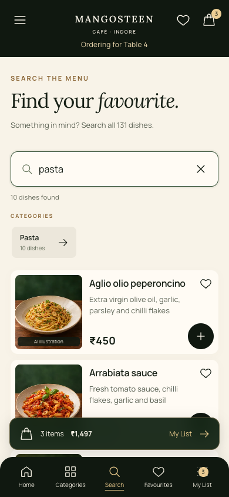
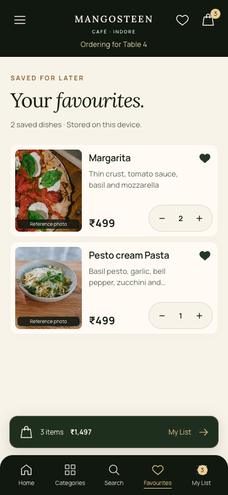
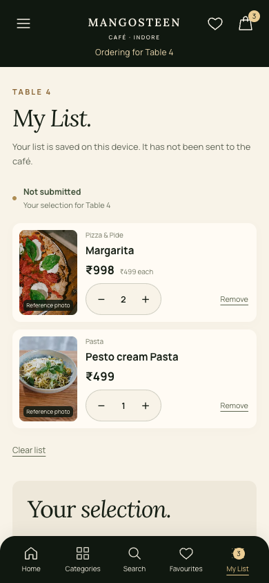
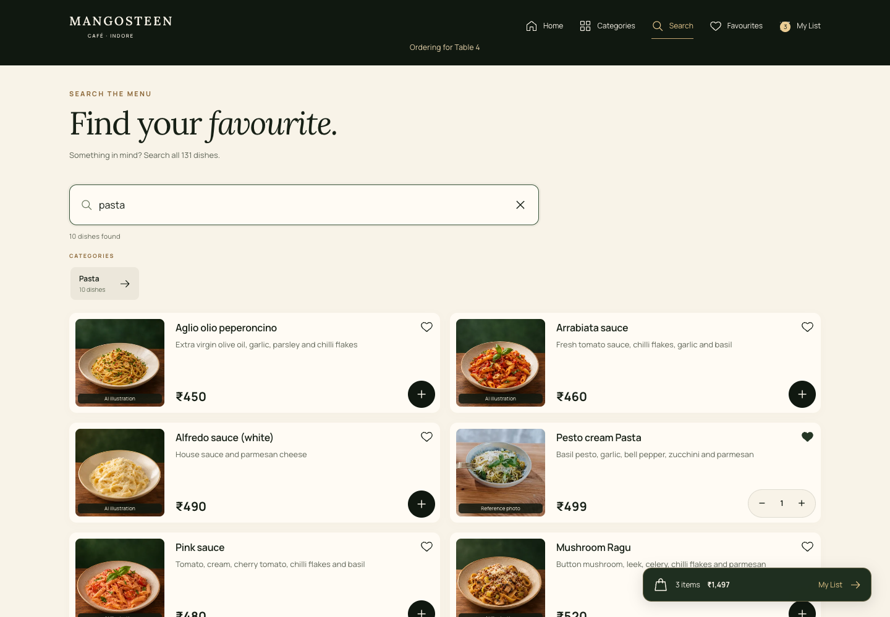
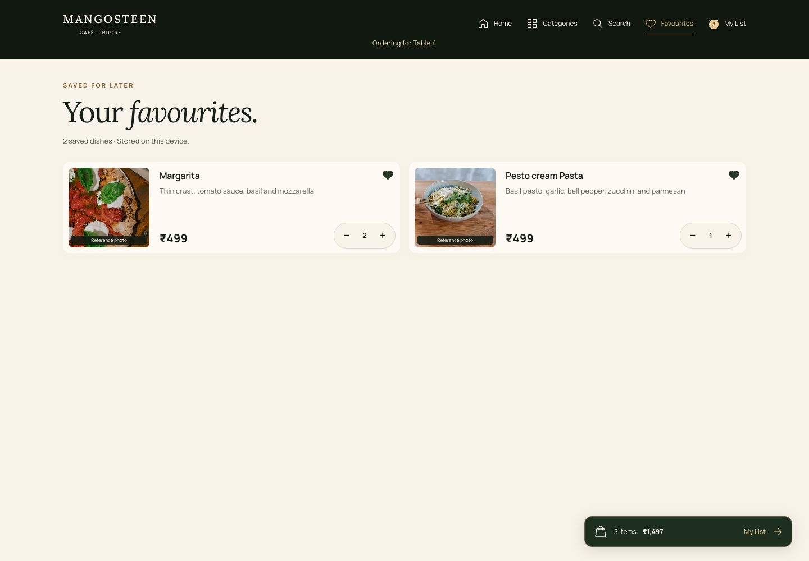
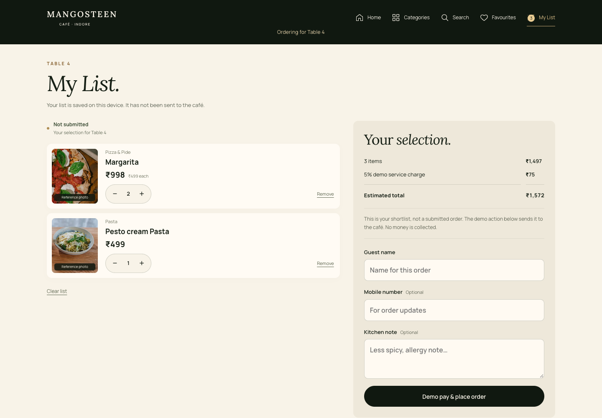

Search · 390px


Search, Favourites and My List refined to match the approved Mangosteen culinary catalogue. Search is instant and includes actual matching categories. My List shows line totals, unit prices for multiples, quantity controls and a clear Not submitted status. Existing demo ordering is retained.
Screenshots use Table 4 QR context to demonstrate the existing selection controls. Website entry remains browse-only. Fixed navigation is shown at the real capture viewport; full-page screenshots may place it over intermediate document content. Bottom padding keeps final controls clear during normal scrolling.






Verified across 320/375/390/430/768/1440px for populated and empty screens, plus the existing 72-route responsive suite. Favourites and quantities survive reload. Search query persists through category navigation and Back. Unit/line prices and totals are calculated from the existing dataset. The explicit existing demo action is the only action that submits an order; browsing and list changes do not.
Saved checkpoint comparisons preserve homepage/reservation source and all original photographs; approved menu landing/gallery, category pages and dish sheets are visually unchanged. No new animation engine, backend changes, payment functionality or photographic assets were introduced. Existing AI/reference disclosures remain.
Lab search-to-results time: median 52.3 ms including automation overhead, at 4× CPU slowdown; not field INP. Three cold production-preview touch runs retained Table 4 across Search, Favourites and My List. Physical-device Safari testing has not been performed.
Open local Table 4 menu preview. No deployment performed.